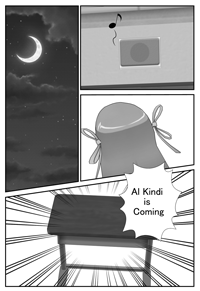

Objectifs
Aujourd’hui, les questions de sécurité des données sont un des enjeux majeurs de notre société, que ce soit pour protéger les transactions bancaires ou garantir la protection de la vie privée. Grâce aux mathématiques et à l’informatique, on peut comprendre les outils mis en oeuvre sur ces sujets.
Nous souhaitons faire découvrir aux lycéens cette application très concrète des mathématiques, qui joue un rôle énorme dans leur vie quotidienne. Nous voulons leur montrer qu’il est possible de prendre du plaisir en faisant des mathématiques. Enfin, nous souhaitons les sensibiliser à la question importante de la sécurité de l’information.
Ce concours rentre dans le cadre de la Stratégie mathématiques et du plan École numérique du Ministère de l’Éducation nationale.
Tous les élèves scolarisés en 4e, 3e ou 2nde dans un établissement français.
Les élèves d'autres classes peuvent faire les épreuves des deux premiers tours.
Pas du tout. Au contraire, c’est le principe ! Ce concours s’adresse à des gens qui n’ont jamais fait de cryptanalyse. Lors des épreuves en temps limité, toutes les informations nécessaires seront contenues dans le sujet.
Le concours est conçu pour s'adpater au niveau de chacun, en particulier le premier tour : chaque défi est proposé en trois versions de niveau de difficulté croissante, ce qui permet à chacun de s'attaquer au moins à la première version de chaque défi et de découvrir les principes de base de la cryptographie. Les plus rapides et efficacent peuvent consacrer leur temps à résoudre un maximum des versions difficiles. Pour le deuxième tour, il s'agit aussi surtout de faire preuve de persévérance et de bien travailler en équipe.
Pas nécessairement, certains problèmes font appel à certaines notions de fin de collège, mais les mathématiques ne sont pas la principale difficulté.
Il n’y a pas de prérequis autres que le programme de collège. Venez avec l’esprit ouvert, faites preuve de logique et suivez les consignes. Et surtout amusez vous !
La première équipe se verra offrir un ordinateur portable par personne.
Les seconds gagneront des tablettes tactiles, les troisièmes des smartphones.
Les membres des 20 meilleures équipes nationales ainsi que de la meilleure équipe de chaque académie gagneront des livres et une invitation à visiter un laboratoire de cryptographie.
Les équipes finalistes seront conviées à une cérémonie officielle de remise des prix à Paris.

Gérard Berry est professeur au Collège de France, où il tient la chaire Algorithmes, machines et langages depuis 2012, après y avoir tenu deux chaires annuelles en 2007-2008 et 2009-2010. Il est également membre de l'Académie des sciences depuis 2002, de l'Académie des technologies depuis 2005, et lauréat de la médaille d'or du CNRS en 2014. Chercheur à l'Ecole des Mines et à l'Inria depuis 1972 il s'intéresse à la logique mathématique et développe à partir de 1982 le langage de programmation Esterel, qui permet de programmer et de certifier le comportement de systèmes complexes (par exemple programmes qui pilotent les avions). Entre 2001 et 2009, il est directeur scientifique d'Esterel Technologies, entreprise créée par des chercheurs, avant de rejoinde l'Inria comme directeur de recherche et président de sa Commission d'évaluation. Il participe activement à la promotion de l'informatique.
Pour faire connaître le concours dans votre établissement, n'hésitez pas à imprimer et diffuser notre affiche :
Versions en pdf à imprimer :
Format A2 ou plus grand en couleur (8Mo)
L'affiche contient 5 énigmes !
Vous pouvez également relire la bande dessinée associée au concours.
Al Kindi est un savant arabe du IXe siècle qui s’est intéressé à de nombreuses sciences allant de la géométrie à la médecine et à la chimie. Dans le « Manuscrit sur le chiffrement des messages cryptographiques » il explique comment casser les meilleurs codes connus à son époque, à l’aide de la technique de l’analyse de fréquence. C’est la première trace connue de cryptanalyse. Par conséquent, il est considéré comme l’un des fondateurs de la discipline.